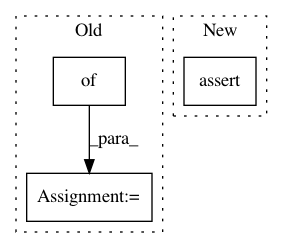

f2f419b89221602dc31c69de32df1cba281db481,upsetplot/tests/test_data.py,,test_from_contents,#,90
Before Change
@pytest.mark.parametrize("typ", [set, list, tuple, iter])
@pytest.mark.parametrize("id_column", ["id", "blah"])
def test_from_contents(typ, id_column):
contents = {"cat1": typ(["aa", "bb", "cc"]),
"cat2": typ(["cc", "dd"]),
"cat3": typ(["ee"]),
}
empty_data = pd.DataFrame(index=["aa", "bb", "cc", "dd", "ee", "ff"])
out = from_contents(OrderedDict(contents), data=empty_data,
id_column=id_column)
out2 = from_memberships(memberships=[{"cat1"},
After Change
assert not out.index.to_frame()["cat4"].any() // cat4 should be all-false
assert len(out.index.names) == 4
out.index = out.index.to_frame().set_index(["cat1", "cat2", "cat3"]).index
assert_frame_equal(out, baseline)
@pytest.mark.parametrize("id_column", ["id", "blah"])
def test_from_contents_invalid(id_column):
In pattern: SUPERPATTERN
Frequency: 6
Non-data size: 3
Instances
Project Name: jnothman/UpSetPlot
Commit Name: f2f419b89221602dc31c69de32df1cba281db481
Time: 2019-05-30
Author: joel.nothman@gmail.com
File Name: upsetplot/tests/test_data.py
Class Name:
Method Name: test_from_contents
Project Name: rwth-i6/returnn-experiments
Commit Name: eae3bda678ff1e626f0a954403e972a565dc06e8
Time: 2020-01-07
Author: rossenbach@i6.informatik.rwth-aachen.de
File Name: 2019-asr-synthetic-data/sisyphus_project/recipe/returnn/search.py
Class Name: RETURNNSearchFromFile
Method Name: __init__
Project Name: zsdonghao/text-to-image
Commit Name: 559342a0aca96ac8bdf3fc0461b37877550539d6
Time: 2017-01-28
Author: dhsig552@163.com
File Name: train_uim2im.py
Class Name:
Method Name: main_train_imageEncoder
Project Name: hassony2/kinetics_i3d_pytorch
Commit Name: e9ac83d6617b1c4483fa7fbd4750ceb448304d3c
Time: 2017-11-24
Author: yana.hasson@inria.fr
File Name: i3nception_tf.py
Class Name:
Method Name:
Project Name: scikit-multiflow/scikit-multiflow
Commit Name: 5875ede5ebfc7e2d46c8d8714e87c11a84ad5d39
Time: 2020-02-28
Author: 17923265+jacobmontiel@users.noreply.github.com
File Name: tests/rules/test_very_fast_decision_rules.py
Class Name:
Method Name: test_vfdr_info_gain
Project Name: rtqichen/torchdiffeq
Commit Name: 625784c31f592f3b760b53faa0c2f31b57be238a
Time: 2020-07-30
Author: 33688385+patrick-kidger@users.noreply.github.com
File Name: torchdiffeq/_impl/odeint.py
Class Name:
Method Name: odeint